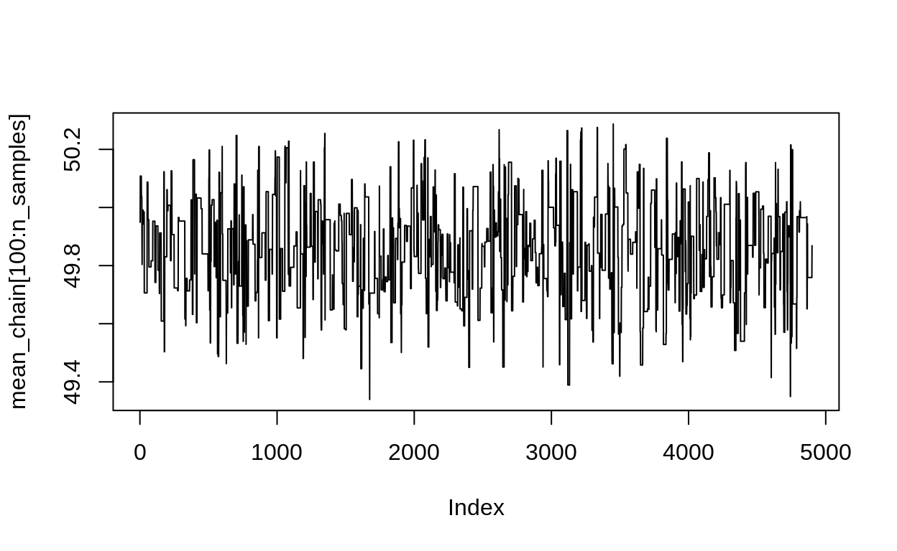
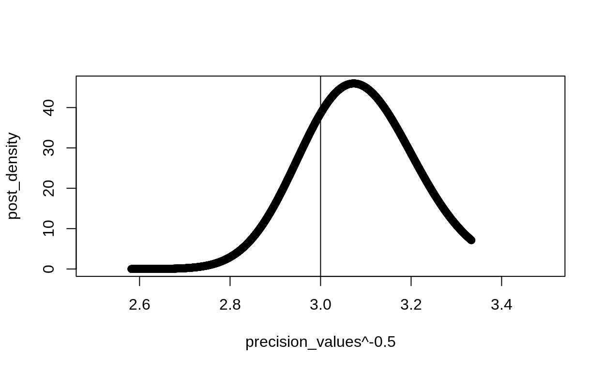
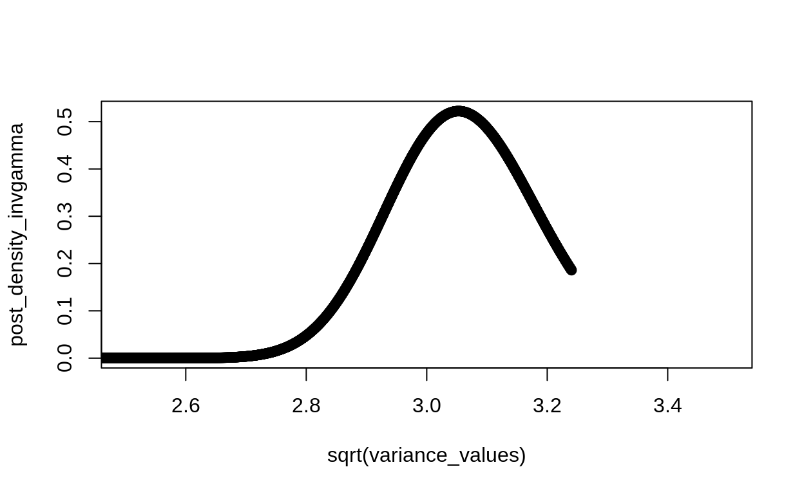
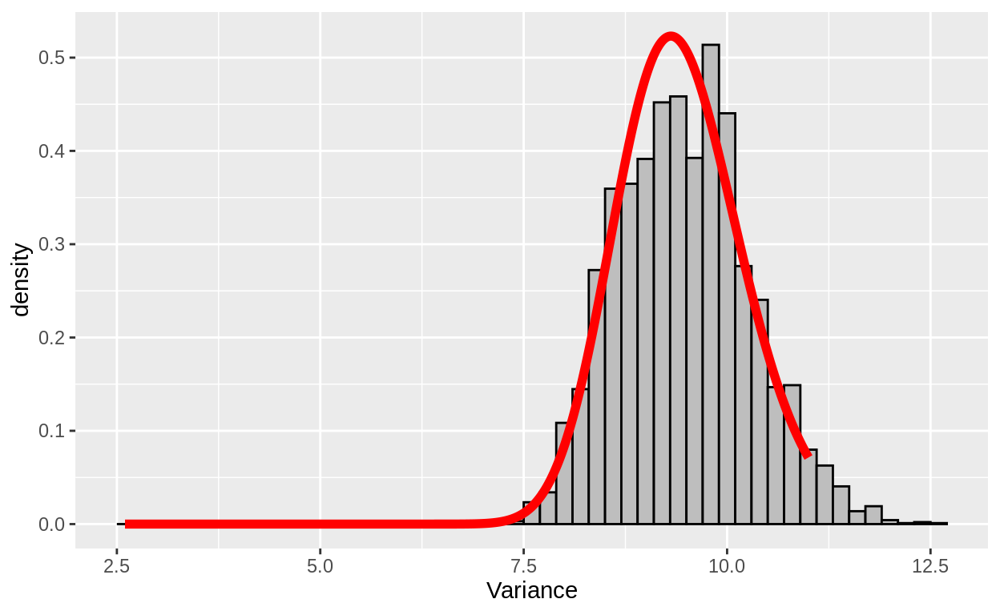
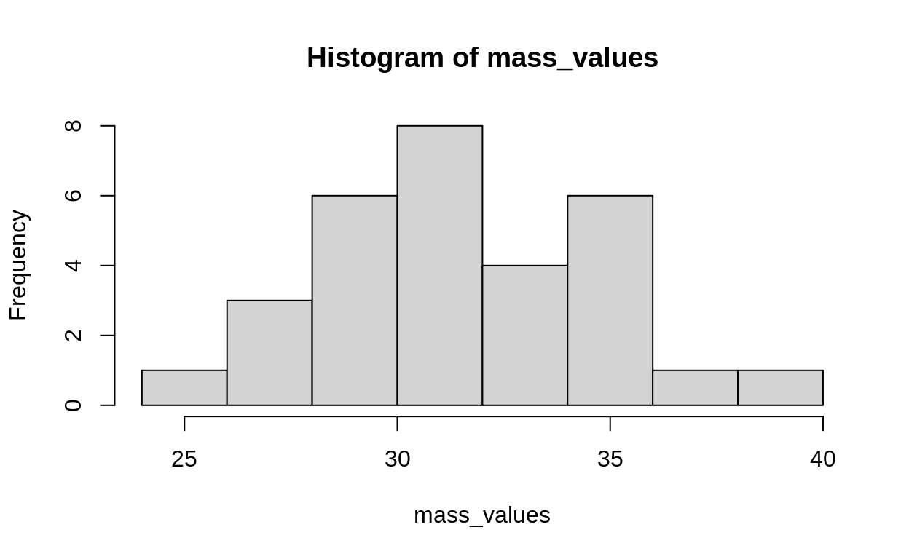
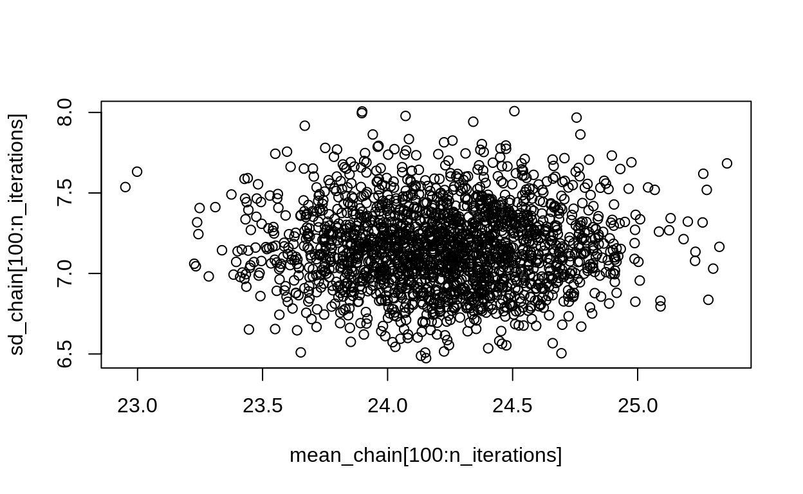
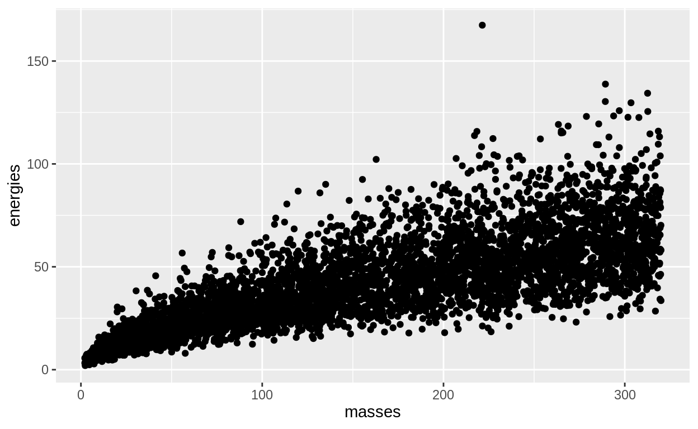
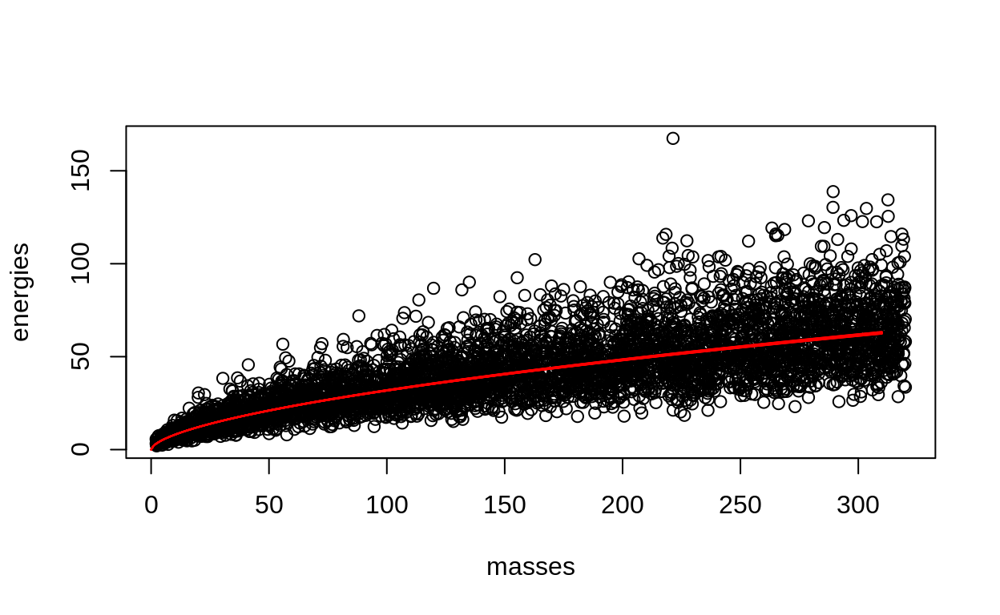
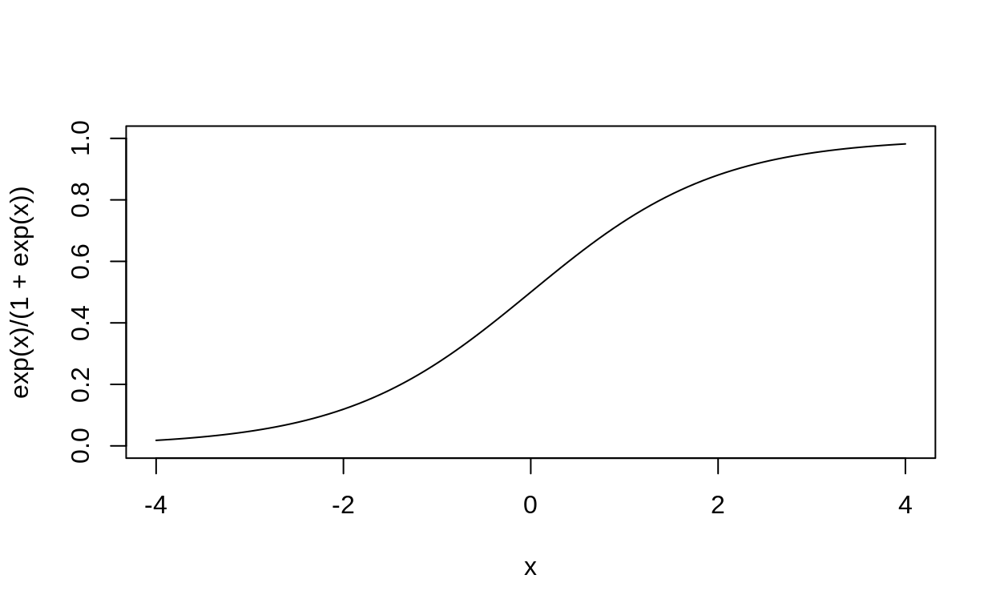
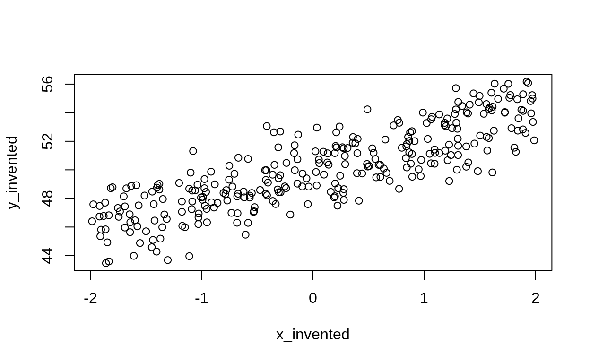

Why we do what we do
In bayesian statistics we use probability distributions to measure uncertainty about the parameter values we care about.
Because we measure uncertainty with probability, that means we work in probability distributions. We begin with distributions, and we end with distributions. The beginning distributions express all we want to say about what our parameters are. They come first, and are called the prior distributions. After we collect data and apply some model to relate it, we find ourselves with a new set of distributions. Because these come after the process of data collection and model creation, this is called the posterior.
This means we are applying Bayes rule. This shows us how to update our priors to reflect what we learned from the experiment and model building:
\[ \begin{align} [\theta_1, \theta_2 | \bf y] &\propto [\theta_1, \theta_2, \bf y] \\ &\propto [\bf y | \theta_1, \theta_2][\theta_1][\theta_2] \\ \end{align} \]
Refreshing questions:
- which of these is the likelihood? Which is the prior?
- why is it OK to use something proportional to (\(\propto\)) what we want?
The whole goal here is to get this posterior distribution. There are many ways to do this! This workshop is about some of them.
- Conjugate priors works for 1-parameter problems. Gives you the literal equation of the posterior distribution. Only directly useful for very simple problems. Becomes the absolute star of the show with Gibbs Sampling.
- Laplace Approximation very handy, useful best guess for many multi-parameter models; were not doing it.
- Metropolis A venerable classic for sampling simple models. You have to propose random jumps around the distribution, and these need to be symmetric
- Metropolis-Hastings same as Metropolis, but the jumps get to be asymmetric.
- Gibbs sampling A wonderful technique for simplifying complex problems. Requires that priors be chosen to make conjugate pairs with likelihoods.
- Metropolis-in-Gibbs is a Deluxe Combo of the previous two.
- HMC etc Hamiltonian Monte Carlo is an advanced modern way of doing the same thing. Sets you free to use the priors that work for your question, not the ones that work for your math.
MCMC in general
The objective of MCMC algorithm is to sample parameters from a complex posterior distribution.
Rather than measure the absolute probability of different parameter values:
\[ [\theta|y] = \frac{[y|\theta][\theta]}{[y]} \]
we sample, and evaluate the relative probability of two possible parameter values:
\[ \frac{[\theta^{new}|y]}{[\theta^k|y]} = \frac{[y|\theta^{new}][\theta^{new}]}{[y|\theta^k][\theta^k]} \]
In this way, we can sample a probability distribution ( \([\theta|y]\) ) using only something proportional to that distribution ( \([y|\theta][\theta]\) ). Put another way, we cant get an equation, so we use interesting numerical tricks to jump straight to a histogram.
The Metropolis Algorithm
STEP 1 Draw \(\theta^{new}\) from a symmetric distribution centered on \(\theta^{k}\) (i.e.in the \(k\)th interation, the current value) e.g.\(\theta^{new} \sim N(\theta^{k}, \sigma_{tune})\)
STEP 2 Calculate the ratio R:
\[ R = \text{min}\left( 1, \frac{[y|\theta^{new}][\theta^{new}]}{[y|\theta^k][\theta^k]}\right) \]
This is the probability of acceptance. In other words, if the ratio is greater than one, that means the proposal is for a more probable value. Well always take it. If the ratio is less than 1, that means the new proposal is less probable than the value we have already. However, theres a chance well take it anyway.
STEP 3 Test to see if runif(1, min=0, max=1) \(< R\). if so, set \(\theta^{k + 1} = \theta^{new}\)
Why should we accept worse parameter values? Why is it good to sometimes stay in the same place?
Metropolis demo: the mean of the Normal Distribution
Lets simulate some data from a normal distribution.
set.seed(1859)
M_true_mean <- 50
correct_sd <- 3
weights <- rnorm(300, mean = M_true_mean, sd = correct_sd)
head(weights)
[1] 48.23651 45.77398 48.84943 47.19116 50.31188 52.54827One possible model for these data could be:
\[ \begin{align} y &\sim \text{Normal}(\mu, 3) \\ \mu &\sim \text{Normal(40, 10)} \end{align} \]
NOTE: We assume we KNOW the standard deviation. In this case, it is exactly 3. This is just for illustration. Later we will see what to do if you have multiple parameters.
To set up a Metropolis sampler, well start by defining four useful functions:
- A function which returns the log-likelihood of our data. As you recall, the likelihood of one datapoint is the probability of sampling that datapoint from a distribution, given specific known parameters. The likelihood of the data is the probability of observing ALL the datapoints. We assume the observations are independent, so we multiply the probability of each datapoint to get the probability of the whole dataset. Because were working on the log scale, instead of multiplication we just use addition.
- a proposal function. This makes new values to try at each iteration of the Markov Chain. Here well use a symmetric proposal function, the uniform distribution.
- A convenience function to add the log-likelihood and the prior together this gives us the numerator of the Bayes formula.
- finally, a function which puts it all together and spits out the probability of acceptance. Because this is a probability, we use
exp()to convert from log-likelihood values back to probability.
## define likelihoods for our problem
MEAN_normal_loglike <- function(data_vec, mean_value){
sum(dnorm(data_vec, mean = mean_value, sd = 3, log = TRUE))
}
# proposal function to make new parameter values.
M_propose_new_val <- function(old_value, tune) {
runif(1, min = old_value - tune, max = old_value + tune)
}
## function to use these to calculate the value of the numerator in Bayes Formula
## We are working on the LOG scale, so we have to ADD these together
numerator <- function(value, data) {
# likelihood
log_like <- MEAN_normal_loglike(data_vec = data, mean_value = value)
# prior
log_prior <- dnorm(x = value, mean = 40, sd = 10, log = TRUE)
return(log_like + log_prior)
}
## function to calculate the acceptance ratio
M_accept_probability <- function(new_value,
old_value,
data_to_use) {
# working on the LOG scale so we SUBTRACT values (the same as dividing these two things)
new <- numerator(value = new_value, data = data_to_use)
old <- numerator(value = old_value, data = data_to_use)
difference_log_scale <- new - old
# use EXP to undo the LOG -- convert back to probability
r <- exp(difference_log_scale)
p_accept <- min(1, r)
return(p_accept)
}
Now that weve set up our functions, we use a for-loop to run the Markov chain:
# set tune parameter
tune_parameter <- 2
# how long should the chain be?
n_samples <- 5000
#start chain
mean_chain <- numeric(n_samples)
# start value
mean_chain[1] <- 30
for (i in 2:length(mean_chain)) {
old_val <- mean_chain[i - 1]
new_val <- M_propose_new_val(old_value = old_val, tune = tune_parameter)
p_accept <- M_accept_probability(new_value = new_val,
old_value = old_val,
data_to_use = weights)
mean_chain[i] <- ifelse(runif(1) < p_accept, new_val, old_val)
}
We can plot the chain iterations to get a first look at our results. This is called a trace plot:
plot(mean_chain)
Figure 1: Trace plot of samples from one Metropolis algorithm
This shows the long road that our sampler takes to get from the starting value to the true mean. For this reason, typically we drop the beginning of the chain. These dropped samples are called the burn in period.
plot(mean_chain[100:n_samples], type = "l")

This shows the fuzzy caterpillar shape of a good, healthy Markov Chain.
The green line shows the true average, which is close to the real value!
The weakness of Metropolis
Metropolis sampling will work, but sometimes we use MUCH more computer power than we need. Lets see how many proposals are rejected in our sampling.
Figure 2: Rejection in the Metropolis algorithm. here values of 0 mean that the sampler kept the same value.
#
n_rejects <- sum(rejects == 0) / n_samples
We rejected 86.18% of the values we tried. Thats not very efficient! Soon well see a more efficient way to do this.
Metropolis-Hastings Algorithm asymmetrical jumps
See the slides on this part here
The same, but we can use an asymmetrical proposal distribution. This means that we can jump in either direction, but one direction is more likely. We need this, because sometimes our parameters are bounded! For example, the standard deviation of a normal distribution can never be negative.
Because our jumps are no longer symmetrical, we need to add a correction factor to our acceptance probability. Now, in addition to the Likelihood and Prior, we have the Candidate distribution getting involved:
\[ r = \frac{[y|\theta^{new}][\theta^{new}][\theta^{old}|\theta^{new}]} {[y|\theta^{old}][\theta^{old}][\theta^{old}|\theta^{new}]} \]
Heres the same expression, but with more words substituted as a guide:
\[ r = \frac{\text{Likelihood}(\text{data}|\theta^{new}) \times \text{Prior}(\theta^{new}, \alpha, \beta) \times \text{Candidate}(\theta^{old}, \mu = \theta^{new}, \sigma_{tune})}{\text{Likelihood}(\text{data}|\theta^{old}) \times \text{Prior}(\theta^{old}, \alpha, \beta)\times \text{Candidate}(\theta^{new}, \mu = \theta^{old}, \sigma_{tune})} \]
once we have \(r\), we can get the probability of acceptance, \(R\), same as above (in the Metropolis algorithm):
\[ R = \text{min}( 1, r) \]
Lets go (back) to our Normal weights example and try this out.
NOTE: We have to assume we KNOW the mean. Later well see examples of what to do if you want to find two or more numbers at once!
Our model will be:
\[ \begin{align} y &\sim \text{Normal}(50, \sigma) \\ \sigma &\sim \text{Gamma}\left(\frac{4^2}{3^2}, \frac{4}{3^2}\right)\\ \end{align} \]
Why this weird notation for the gamma distribution?
Here Im using a classic trick called moment matching. We do this because for almost all distributions with two parameters, the mean and standard deviation each depend on both parameters. This means that each parameter is also a function of both the mean and the standard deviation. That means we cant directly set the mean and variance of a distribution with one parameter each.1
Instead, we reparameterize the distribution, which just means we use values that correspond to the average and the standard deviation (or something like it). This is really helpful when youre using these distributions for ecology!
for mean \(\mu\) and standard devation \(\sigma\), the Gamma distribution parameters are:
\[ \text{Gamma}\left(\frac{\mu^2}{\sigma^2}, \frac{\mu}{\sigma^2}\right) \]
heres a quick demo to convince you:
Proposal distribution
We also need a distribution for the proposals we will try in the algorithm. This distribution should be above 0, since we cant have a 0 variance. The lognormal is a good choice (and is hopefully clear since it is not the same distribution as the gamma)
What does \(\text{lognormal}(2, 0.2)\) look like?
Code for Metropolis Hastings
Lets do Metropolis Hastings. We begin as before, with an expression for the numerator of Bayes Rule:
## define likelihoods for our problem
MH_normal_loglike <- function(data_vec, sd_value){
sum(dnorm(data_vec, mean = 50, sd = sd_value, log = TRUE))
}
######## ~~~!!!!!!!!!!!!!~~~~~~#########
## NOTE that the mean gets logged as it goes into rlnorm and dlnorm!!
## This is a very necessary detail
## read the help files (?rlnorm) to find out what the R functions expect
######## ~~~!!!!!!!!!!!!!~~~~~~#########
# proposal function to make new parameter values.
MH_propose_new_val <- function(old_value, sig_tune) {
rlnorm(1, mean = log(old_value), sd = sig_tune)
}
MH_propose_density <- function(jump_to, jump_from, sig_tune) {
dlnorm(x = jump_to, meanlog = log(jump_from), sdlog = sig_tune)
}
## function to use these to calculate the value of the numerator in Bayes Formula
## We are working on the LOG scale, so we have to ADD these together
MH_numerator <- function(v, data) {
# likelihood
log_like <- MH_normal_loglike(data_vec = data, sd_value = v)
# prior
log_prior <- dgamma(x = v, shape = 4^2/3^2, rate = 4/3^2, log = TRUE)
return(log_like + log_prior)
}
## function to calculate the acceptance ratio
MH_accept_probability <- function(new_value, old_value,
data_to_use,
tune_parameter) {
# working on the LOG scale so we SUBTRACT values (the same as dividing these two things)
new <- MH_numerator(v = new_value, data = data_to_use)
old <- MH_numerator(v = old_value, data = data_to_use)
difference_log_scale <- new - old
# use EXP to undo the LOG
r <- exp(difference_log_scale)
# calculate the correction -- asymmetrical proposal
new_from_old <- MH_propose_density(jump_to = new_value,
jump_from = old_value,
sig_tune = tune_parameter)
old_from_new <- MH_propose_density(jump_to = old_value,
jump_from = new_value,
sig_tune = tune_parameter)
R <- r * (old_from_new / new_from_old)
p_accept <- min(1, R)
return(p_accept)
}
The proposal distribution, centered on a value (e.g.\(9\), to pick a random example) should be the same as the proposal density, centered on the same value.
replicate(3000, MH_propose_new_val(9, 0.1)) %>% hist(probability = TRUE)
curve(MH_propose_density(jump_to = x, jump_from = 9, sig_tune = 0.1), xlim = c(5,14), add = TRUE)
Figure 3: Quick comparison of random proposals, compared to the output of the proposal density function. This shows that the proposal density function is just giving us the probability of different values for the next proposal.
# set tune parameter
tune_parameter <- .2
# how long should the chain be?
n_samples <- 5000
#start chain
sd_chain <- numeric(n_samples)
# start value
sd_chain[1] <- 7
for (i in 2:length(sd_chain)) {
old_val <- sd_chain[i - 1]
new_val <- MH_propose_new_val(old_value = old_val, sig_tune = tune_parameter)
p_accept <- MH_accept_probability(new_value = new_val,
old_value = old_val,
data_to_use = weights,
tune_parameter = tune_parameter)
sd_chain[i] <- ifelse(runif(1) < p_accept, new_val, old_val)
}
plot(sd_chain[300:n_samples], type = "l")
Figure 4: Metropolis Hastings chain for the posterior distribution of a standard deviation. Here weve dropped the burn-in period already.
Close to the true value of correct_sd which is 3.
PSA: I made MANY errors while I was writing the above. If I had not started with simulated data, I would never have known!! Each time, I compared my answer to correct_sd and then went looking for the errors. Please remember to always do this, especially when you are coding an algorithm yourself!
Experiment with changing the proposal distribution! try for example gamma distribution:
One Weird Trick to make calculating the posterior easy
Mean of a Normal Distribution
model is something like
\[ \begin{align} y &\sim \text{Normal}(\mu, 3) \\ \mu &\sim \text{Normal(40, 10)} \end{align} \]
if the variance is known, the posterior for the mean is a Normal distribution:
\[ \mu' \sim \text{Normal}\left(\frac{\frac{m}{s}+ \frac{\sum{y}}{\sigma^2}}{\frac{1}{s^2} + \frac{n}{\sigma^2}}, \left(\frac{1}{s^2} + \frac{n}{\sigma^2}\right)\right) \]
Note that \(m\) is the prior mean and \(s\) is the prior variance. This is the prior on the parameter \(\mu\), the mean of the distribution of the observations.
posterior_mean_calculate <- function(y_vector, known_sigma,
prior_mean, prior_sd,
n = length(y_vector)){
numerator_mean <- (prior_mean/prior_sd^2 + sum(y_vector) / known_sigma^2)
denominator_mean <- (1 / prior_sd^2 + n / known_sigma^2)
new_mean <- numerator_mean / denominator_mean
new_var <- 1/denominator_mean
return(list(mean = new_mean, sd = sqrt(new_var)))
}
## calculate the posterior distribution of the mean for the weights data
posterior_parameters <- posterior_mean_calculate(weights, 3,
prior_mean = 30,
prior_sd = 10)
hist(mean_chain[300:n_samples], probability = TRUE)
curve(dnorm(x,
mean = posterior_parameters$mean,
sd = posterior_parameters$sd), add = TRUE)
Figure 5: The Posterior distribution of the mean of a normal distribution. Here we find it two ways: first, using the conjugate prior. Second, using the Metropolis algorithm. You can see that the two are a close match.
Variance of the Normal Distribution
First we need to do a little math tweak to the model:
\[ \begin{align} y &\sim \text{Normal}(50, \sigma) \\ \frac{1}{\sigma^2} &\sim \text{Gamma}\left(\frac{4^2}{3^2}, \frac{4}{3^2}\right)\\ \end{align} \]
Now instead of setting the prior on \(\sigma\) directly, we set the prior on the inverse square of sigma!2
We can think of this as a kind of link function. Doing a bit of algebra, we can see that:
\[ \begin{align} y &\sim \text{Normal}(50, g^{-1/2}) \\ g &\sim \text{Gamma}\left(\frac{4^2}{3^2}, \frac{4}{3^2}\right)\\ \end{align} \]
I admit that this makes setting reasonable priors awkward, so lets go back to plotting:
if the mean is known, then the posterior distribution for the variance is an inverse gamma:
\[ \frac{1}{\sigma^2} \sim \text{Gamma}\left(\alpha + \frac{n}{2}, \beta + \frac{\sum (y_i - \mu)^2}{2}\right) \]
Another, way less bothersome way to write this is with a related distribution, called the Inverse Gamma:
\[ \sigma^2 \sim \text{InvGamma}\left(\alpha + \frac{n}{2}, \beta + \frac{\sum (y_i - \mu)^2}{2}\right) \]
You can convert both precision and varience to the standard deviation with some algebra.
precision_values <- seq(0.09, .15, length.out = 3000)
post_density <- dgamma(precision_values, 2^2/50^2 + length(weights)/2, 2/5^2 + sum((weights - 50)^2)/2)
plot(x = precision_values^-.5, y = post_density, xlim = c(2.5,3.5))
(precision_values^-.5)[which.max(post_density)]
[1] 3.073139abline(v = correct_sd)

equivalently:
variance_values <- seq(2.5, 10.5, length.out = 3000)
post_density_invgamma <- extraDistr::dinvgamma(variance_values,
alpha = 2^2/50^2 + length(weights)/2,
beta = 2/5^2 + sum((weights - 50)^2)/2)
plot(x = sqrt(variance_values), y = post_density_invgamma, xlim = c(2.5,3.5))

posterior_sds <- tibble(sigma = seq(from = 2.6,
to = 11,
length.out = 500),
density = extraDistr::dinvgamma(x = sigma,
alpha = 2^2/5^2 + length(weights)/2,
beta = (2/5^2 + sum((weights - 50)^2)/2)))
tibble(v = sd_chain[300:n_samples]) %>%
ggplot(aes(x = v^2)) +
geom_histogram(aes(y = ..density..),
binwidth = .2, fill = "grey", color = "black") +
geom_line(aes(x = sigma, y = density),
data = posterior_sds,
col = "red", size = 2) +
labs(x = "Variance")

Gibbs sampling
Gibbs sampling is like knitting. Imagine you have several parameters and youre going to take posterior samples for each one.
vals <- expand_grid(y = 5:1, x = 1:3)
pnames <- c("beta[0]", "beta[1]", "sigma")
vals <- mutate(vals,
par = pnames[x])
out_list <- map(3:nrow(vals), ~ transform(vals, s = rep(c(1,0), times = c(.x, nrow(vals)-.x))))
names(out_list) <- stringr::str_pad(1:length(out_list), width = 2, pad = "0")
library(gganimate)
p <- out_list %>%
bind_rows(.id = "sim") %>%
ggplot(aes(x = x, y = y, width = 1, height = 1, fill = s, label = par)) +
geom_tile(col = "black", lwd = 2) +
geom_text(parse = TRUE) +
guides(fill = FALSE) +
theme_void() +
transition_states(sim, transition_length = 0, state_length = 1)
animate(p, nframes = 15)
In this simple animation, each column is a parameter and each row is an iteration of the model.
Gibbs sampling works by simplifying a multivariate problem into small steps and tackling each one. We consider that all the parameters are known except the one we are sampling right now. Then, we sample form the posterior distribution for that parameter. This sampling can be done by conjugate posteriors, as we did above. It can also be done with the Metropolis or Metropolis-Hastings algorithm, or even with a combination of the two!
The steps for this algorithm are similar to the previous ones:
- Start with random values for each parameter.
- assuming that all are correct except the first, sample a value for the first.
- Assuming that sample was correct for the first, sample the second.
Gibbs demo with the Normal Distribution
Lets begin by simulating some values from a normal distribution:
true_mean <- 31
true_sd <- 4
sample_size <- 30
set.seed(1859)
mass_values <- rnorm(n = sample_size, mean = true_mean, sd = true_sd)
hist(mass_values)

We define a model for these data. We do this in a very deliberate way, choosing the priors to be conjugates:
\[ \begin{align} y &\sim \text{Normal}(\mu, \sigma) \\ \mu &\sim \text{Normal}(10,5) \\ \frac{1}{\sigma^2} &\sim \text{Gamma}(4.1^2/2^2, 4.1/2^2) \end{align} \]
Why did I choose the mean of 4.5 for the gamma distribution? What is a gamma distribution anyway, and what does this strange link function mean?
As usual, simulation is a great way to understand and practice.
Lets start by simulating values with a mean of

Defining and running a Gibbs Sampler
To implement this model we need to write functions that will do each of these things in turn.
# calculate the posterior normal distribution for the data and a known variance
post_mean <- function(y_vector, known_sigma,
prior_mean, prior_sd,
n = length(y_vector)){
numerator_mean <- (prior_mean/prior_sd^2 + sum(y_vector) / known_sigma^2)
denominator_mean <- (1 / prior_sd^2 + n / known_sigma^2)
new_mean <- numerator_mean / denominator_mean
new_var <- 1/denominator_mean
rnorm(1, mean = new_mean, sd = sqrt(new_var))
}
# fun to play with this! make sure it makes sense!
post_mean(y_vector = c(2,4,1,5), .1, 7, 2)
[1] 2.984141post_sd <- function(y_vector, known_mean, prior_alpha, prior_beta){
new_alpha <- prior_alpha + length(y_vector) / 2
new_beta <- prior_beta + sum((y_vector - known_mean)^2) / 2
inverse_variance <- rgamma(n = 1, shape = new_alpha, rate = new_beta)
sd_sample <- sqrt(1/inverse_variance)
return(sd_sample)
}
post_sd(c(2,4,1,5), known_mean = 3, prior_alpha = 2^2/2^2, prior_beta = 2/2^2)
[1] 1.126258[1] 1.825742true_mean <- 24
true_sd <- 7
y_data <- rnorm(400, mean = true_mean, sd = true_sd)
# gibbs process
n_iterations <- 2000
mean_chain <- numeric(n_iterations)
sd_chain <- numeric(n_iterations)
# sample to start -- could be anything, might as well be priors
mean_chain[1] <- rnorm(1, mean = 10, sd = 5)
sd_chain[1] <- rgamma(1, shape = 3^2/2^2, rate = 3/2^2)
for (k in 2:n_iterations) {
# draw a mean
mean_chain[k] <- post_mean(y_vector = y_data,
known_sigma = sd_chain[k - 1],
prior_mean = 10,
prior_sd = 5)
sd_chain[k] <- post_sd(y_vector = y_data,
known_mean = mean_chain[k],
prior_alpha = 3^2/2^2,
prior_beta = 3/2^2)
}
par(mfrow = c(1,2))
plot(mean_chain)
abline(h = true_mean, col = "red", lwd = 2)
plot(sd_chain)
abline(h = true_sd, col = "red", lwd = 2)

You can see that the chains are almost exactly what we want.
Are the posterior medians close to the real values?
median(mean_chain[100:n_iterations])
[1] 24.22588true_mean
[1] 24median(sd_chain[100:n_iterations])
[1] 7.153504true_sd
[1] 7Play with these values and see if you can break this algorithm.
We can also look at the pairs plot, like this
plot(mean_chain[100:n_iterations], sd_chain[100:n_iterations])

This reveals if there are any correlations in the posterior.
Metropolis-in-Gibbs
Sometimes we need a Deluxe option running a Metropolis Hastings sampler inside a Gibbs sampler
Lets look at an example where that is necessary
\[ \begin{align} y &\sim \text{LogNormal}(\text{log}) \\ \end{align} \]
truemean <- 15
truesd <- 3
ff <- rlnorm(2000,
meanlog = log(truemean) - .5*log((truemean^2 + truesd^2)/truemean^2),
sdlog = log((truemean^2 + truesd^2)/truemean^2)^.5)
mean(ff)
[1] 15.03566sd(ff)
[1] 2.99522hist(ff)

conjugacy and the lognormal
# mean 2 sd = 3
curve(dnorm(x,
mean = (2/20^2 + sum(log(ff))/truesd^2)/(1/20^2 + length(ff)/truesd^2),
sd = (1/20^2 + length(ff)/truesd^2)^-1),
xlim = c(1, 10)
)
abline(v = log(truemean))

curve(dgamma(x,
shape = 3 + length(ff)/2,
rate = 4 + sum( (log(ff) - truemean )^2) / 2), xlim = c(0,.01))
(1/truesd^2)
[1] 0.1111111ml <- log(truemean) - .5*log((truemean^2 + truesd^2)/truemean^2)
curve(dgamma(x,
shape = 3 + length(ff)/2,
rate = 4 + sum( (log(ff) - ml )^2) / 2), xlim = c(0,40))
abline(v = 1/log((truemean^2 + truesd^2)/truemean^2))

# mean 2 sd = 3
truemean <- 20
truesd <- 9
meanlog = log(truemean) - .5*log((truemean^2 + truesd^2)/truemean^2)
sdlog = log((truemean^2 + truesd^2)/truemean^2)^.5
#this sdlog thing is so weird!
curve(log((truemean^2 + x^2)/truemean^2)^.5, xlim = c(0,200))
sd(ff)
[1] 8.398296curve(extraDistr::dinvgamma(x,
alpha = 3 ,
beta = 4),
xlim = c(0,5), ylim = c(0,1))
curve(extraDistr::dinvgamma(x,
alpha = 3 + length(ff)/2,
beta = 4 + sum( (log(ff) - meanlog)^2 ) / 2),
add = TRUE
)
abline(v = sdlog^2)


- some kind of decerating power curve
- one of the parameters is probably less than 1 but not less than 0
true_sd <- 4
true_value_at_one <- 2
true_exponent <- .5
library(tibble)
energy_mass <- tibble(
masses = runif(n = 200, min = 2, max = 320),
avg_energy = true_value_at_one*masses^true_exponent,
energies = rlnorm(200,
meanlog = log(avg_energy) - .5*log((avg_energy^2 + true_sd^2)/avg_energy^2),
sdlog = log((avg_energy^2 + true_sd^2)/avg_energy^2)^.5))
library(ggplot2)
energy_mass %>%
ggplot(aes(x = masses, y = energies)) + geom_point()

Bonus Zone
Conjugate priors, Metropolis-Hastings, and Penguins
Proof of Beta & Binomial conjugate pair
\[ \begin{align} [p|\text{trials}, \text{successes}, \alpha, \beta] &\propto [\text{successes} | \text{trials}, p] \times [p | \alpha , \beta]\\ &\propto \text{Binomial}(p,\text{trials}) \times \text{Beta}(\alpha, \beta)\\ &\propto{\text{trials} \choose \text{successes}}p^\text{successes}(1-p)^{\text{trials}-\text{successes}} \times \text{B} p^{\alpha - 1}(1-p)^{\beta - 1}\\ &\propto p^\text{successes}(1-p)^{\text{trials}-\text{successes}} \times p^{\alpha - 1}(1-p)^{\beta - 1}\\ &\propto p^{\alpha + \text{successes} - 1}(1-p)^{ \beta + \text{trials}-\text{successes} - 1} \end{align} \]
Now we only have to realize that the last line is a beta distribution, without the magic number that we called \(B\) before. This value is whats called a normalizing constant. Normalizing constants make the proportional expression (like the one above) into a probability distribution
\[ [p|\text{trials}, \text{successes}, \alpha, \beta] = \text{Beta}(\alpha + \text{successes} - 1, \beta + \text{trials}-\text{successes} - 1) \]
So the posterior distribution is a Beta distribution, just like the prior was! We have it already, with no need for any fancy sampling approach.
This also gives us an easy interpretation of what the parameters of any Beta distribution are: \(\alpha\) is something like the number of successes, and \(\beta\) is something like the number of failures3.
Suppose we had written the model like this:
\[ \begin{align} y &\sim \text{Binomial}(p, N) \\ \text{logit}(p) &= \alpha\\ \alpha &\sim \text{Normal}(1, 1) \end{align} \]
Remember that the binomial distribution is written as:
\[ {n \choose k} p^k (1-p)^{n-k} \]
the two lines in equation 1 are just a shorthand for saying replace \(p\) with the inverse logit of \(\alpha\). We could also write it this way, literally replacing \(p\) with that function
\[ \begin{align} y &\sim {n \choose k} \left(\frac{e^\alpha}{1 + e^\alpha} \right)^{k}\left(1-\frac{e^\alpha}{1 + e^\alpha}\right)^{n-k} \\ \alpha &\sim \text{Normal}(1, 1) \end{align} \]
Another quick reminder, remember that the logistic function is a traditional way of squishing any real number into the interval \((0,1)\):
\[ \frac{e^x}{1 + e^x} \]

Lets imagine an experiment where we place exactly 42 seeds in experimental plots. We use 30 experimental plots.
We want to estimate a probability of germination for these seedlings
Our model looks like this:
\[ \begin{align} y &\sim \text{Binomial}(p_{\text{survival}}, 42)\\ p_{\text{survival}} &\sim \text{Beta}(2,5)\\ \end{align} \]
in English, this means:
- We thing that the number of seedlings which germinate will follow a Binomial distribution. This means that out of a total of 42, some survive. The probability for any surviving is the same: \(p_{\text{survival}}\)
## start with some survival data -- out of 42
true_prob <- 0.7
set.seed(1859)
n_surviving <- rbinom(n = 300, size = 42, prob = true_prob)
hist(n_surviving, xlim = c(0, 42))

Can use the conjugate posterior.
First, use the conjugate prior to the binomial (beta distribution).
This might be a reasonable first guess. But what does it actually mean? we need to do predictions to make sure.
possible_probabilities <- rbeta(300, 2, 5)
hist(rbinom(30, 42, possible_probabilities), xlim = c(0, 42))

Do this a bunch of times, to see if the prior is foolish or not.
With enough data, even an outlandish prior is fine:
calculate the posterior
Sampling this model: the Metropolis algorithm
Once again, our model is:
\[ \begin{align} y &\sim \text{Binomial}(p, N) \\ \text{logit}(p) &= \alpha\\ \alpha &\sim \text{Normal}(1, 1) \end{align} \]
Now we have no conjugate posterior for \(\alpha\). However, just because we cant calculate the distribution doesnt mean we cant sample it!
We can use the Metropolis algorithm.
## define likelihoods for our problem
binomial_loglike <- function(data_vec, prob_new){
sum(dbinom(data_vec, size = 42,
prob = prob_new, log = TRUE))
}
normal_loglike <- function(val, mean_prior, sd_prior){
dnorm(val, mean = mean_prior, sd = sd_prior, log = TRUE)
}
# define our function
logistic_curve <- function(x) exp(x)/(1 + exp(x))
## function to use these to calculate the value of the numerator in Bayes Formula
numerator <- function(v, data) {
binomial_loglike(data_vec = data, prob_new = logistic_curve(v)) +
normal_loglike(val = v, mean = -1, sd = 2)
}
## function to calculate the acceptance ratio
accept_probability <- function(new_value, old_value, data_to_use) {
r <- exp(numerator(v = new_value, data = data_to_use) -
numerator(v = old_value, data = data_to_use))
p_accept <- min(1, r)
return(p_accept)
}
# proposal function to make new parameter values.
propose_new <- function(x, sig_tune) rnorm(1, mean = x, sd = sig_tune)
# start value
metropolis <- function(dataset,
n_samples,
tune_parameter,
start_value){
chain <- numeric(n_samples)
chain[1] <- start_value
for (i in 2:length(chain)) {
old <- chain[i - 1]
new <- propose_new(old, sig_tune = tune_parameter)
p_accept <- accept_probability(new_value = new,
old_value = old,
data_to_use = dataset)
chain[i] <- ifelse(runif(1) < p_accept, new, old)
}
return(chain)
}
chain <- metropolis(dataset = n_surviving,
n_samples = 3000,
tune_parameter = 0.2,
start_value = 0)
plot(chain[300:3000], type = "l")

hist(chain[300:5000])

Application: Clutch success in the Palmer Penguins
pr <- read.csv(path_to_file("penguins_raw.csv"))
penguins_raw %>%
count(Species, `Clutch Completion`) %>%
pivot_wider(names_from = `Clutch Completion`, values_from = n) %>%
knitr::kable(.)
| Species | No | Yes |
|---|---|---|
| Adelie Penguin (Pygoscelis adeliae) | 14 | 138 |
| Chinstrap penguin (Pygoscelis antarctica) | 14 | 54 |
| Gentoo penguin (Pygoscelis papua) | 8 | 116 |
With this, we can calculate the posterior probability of clutch success for each penguin species.
\[ \begin{align} n_{\text{succeeded}} &\sim \text{Binomial}(p_{\text{success}}, n_{\text{nesting}})\\ p_{\text{success}} &\sim \text{Beta}(7,3)\\ \end{align} \]
Three parameters at once
Imagine that you are doing a simple linear regression and you want to get three parameters: the slope, the intercept, and the variance of the observations.
We perform the same procedure, looking for gibbs samples where we can.
n_invented <- 300
x_invented <- runif(n = n_invented, -2, 2)
true_intercept <- 50
true_slope <- 2
true_observation_sd <- 1.5
y_invented <- rnorm(n = n_invented,
mean = true_intercept + true_slope*x_invented,
sd = true_observation_sd)
plot(x_invented, y_invented)

# gibbs process
n_iterations <- 2000
b0_chain <- numeric(n_iterations)
b1_chain <- numeric(n_iterations)
observation_sd_chain <- numeric(n_iterations)
# sample to start -- could be anything, might as well be priors
b0_chain[1] <- rnorm(1, mean = 10, sd = 5)
b1_chain[1] <- rnorm(1, mean = 0, sd = 2)
observation_sd_chain[1] <- rgamma(1, shape = 3^2/2^2, rate = 3/2^2)
for (k in 2:n_iterations) {
# draw a mean
b0_chain[k] <- post_mean(
y_vector = y_invented - x_invented * b1_chain[k - 1],
known_sigma = observation_sd_chain[k - 1],
prior_mean = 10,
prior_sd = 5)
b1_chain[k] <- post_mean(
y_vector = (y_invented - b0_chain[k])*x_invented,
known_sigma = observation_sd_chain[k - 1],
prior_mean = 0,
prior_sd = 2,
n = sum(x_invented^2))
observation_sd_chain[k] <- post_sd(
y_vector = y_invented,
known_mean = b0_chain[k] + x_invented * b1_chain[k],
prior_alpha = 3^2/2^2,
prior_beta = 3/2^2)
}
par(mfrow = c(1,3))
plot(b0_chain[100:n_iterations])
abline(h = true_intercept, col = "red", lwd = 2)
plot(b1_chain[100:n_iterations])
abline(h = true_slope, col = "red", lwd = 2)
plot(observation_sd_chain[100:n_iterations])
abline(h = true_observation_sd, col = "red", lwd = 2)
could also plot some interesting posterior predictive plots in this way.
Metropolis hastings and gibbs at the same time
Sometimes you will have a model for which you cant (or dont want to) use conjugate posteriors for each of the conditional distributions.
Clara Coffee Example
clara_coffee <- tibble::tribble(
~Coffee_extraction, ~time,
15.88, 19.13875598,
16.72, 7.633587786,
16.72, 22.90076336,
17, 30,
17.3, 5.479452055,
17.64, 12.93103448,
17.75, 9.459459459,
17.77, 12.93103448,
17.99, 10.18867925,
18, 6,
18.03, 11.86440678,
18.32, 15.54404145,
18.57, 23.71794872,
18.89, 24.75247525,
19.13, 6.4,
19.33, 20.30456853,
19.36, 18.71345029,
19.5, 33.49282297,
19.67, 13.61867704,
20.23, 15.81027668,
20.26, 17.54385965,
20.39, 13.76146789,
20.45, 14.93775934,
20.57, 13.61867704,
20.61, 14.85148515,
20.69, 39.408867,
20.76, 6.944444444,
20.84, 8.968609865,
20.88, 11.40684411,
20.95, 9.756097561,
21.04, 4.843304843,
21.2, 14.0969163,
21.25, 15.2,
21.36, 6.060606061,
21.72, 11.52073733,
21.86, 10.89494163,
22.14, 8.849557522,
22.26, 8.532423208,
22.47, 13.39285714,
22.48, 5.333333333,
23.48, 6.134969325,
24.29, 6.993006993,
24.35, 7.86163522,
24.63, 12.95336788
)
library(ggplot2)
ggplot(clara_coffee, aes(x = time, y = Coffee_extraction/100)) +
geom_point()
#' what are the response distribution?
#'
#' what is the question?
#' quel est la relation entre la coule d'eau et lextraction de cafe
#'
# response distribtuion -- between 0 and 1. Could be the beta.
# normal -- for pragmatic reasons ?
curve(dgamma(x, shape = (2)^2/4, rate = 2/4), xlim = c(0,5))
sigma_coffee <- 1/sqrt(rgamma(1, shape = (2)^2/4, rate = 2/4))
mean_coffee <- rnorm(1, 21, 3)
change_coffee <- rnorm(1, 1, 1)
clara_coffee$t_centered <- with(clara_coffee, time - mean(time))
clara_coffee_prior <- transform(clara_coffee,
average_measure = mean_coffee +
change_coffee*t_centered)
clara_coffee_prior$fake_obs <- rnorm(n = nrow(clara_coffee),
mean = clara_coffee_prior$average_measure,
sd = sigma_coffee)
ggplot(clara_coffee_prior, aes(x = Coffee_extraction, y = fake_obs)) +
geom_point()
except for the Normal distribution. The Normal is a beautiful weirdo which is why we love it!
Why do we do the inverse square? Well, the square of the standard deviation is the variance. As we know, the larger the variance, the wider the distribution. The inverse variance has the opposite interpretation: the larger it is, the more narrow and focussed the distribution! This is called the precision, and it is another common way to think about the Normal Distribution.
Not EXACTLY successes and failures because \(\alpha\) and \(\beta\) can be decimal numbers (e.g.1.5) and obviously real successes and failures cant be. You can think of these as pseudosuccesses and pseudofailures or, as I prefer, successosity and failishness